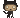

Meu nome é Gustavo Guanabara, sou professor de tecnologia deste 1994, e hoje produzo
conteúdos para quem está
iniciândo no ramo da programação e desenvolvimento de sites /
aplicações. São muitos anos dentro de sala de aula, tentando
mostrar de forma simples
e objetiva alguns conceitos que / muita gente iniciânte acha muito dificil.
cursoemvideo - Se inscreve lá no meu canal no YouTube.
gustavoguanabara - Acessa meu repositório público no GitHub.
gustavoguanabara - Me segue lá no Instagram.
guanabara - Me segue lá no Twitter.
guanabara - Me adciona lá no Linkedin.
gustavoguanabara - Me acompanhe lá no Facebook.